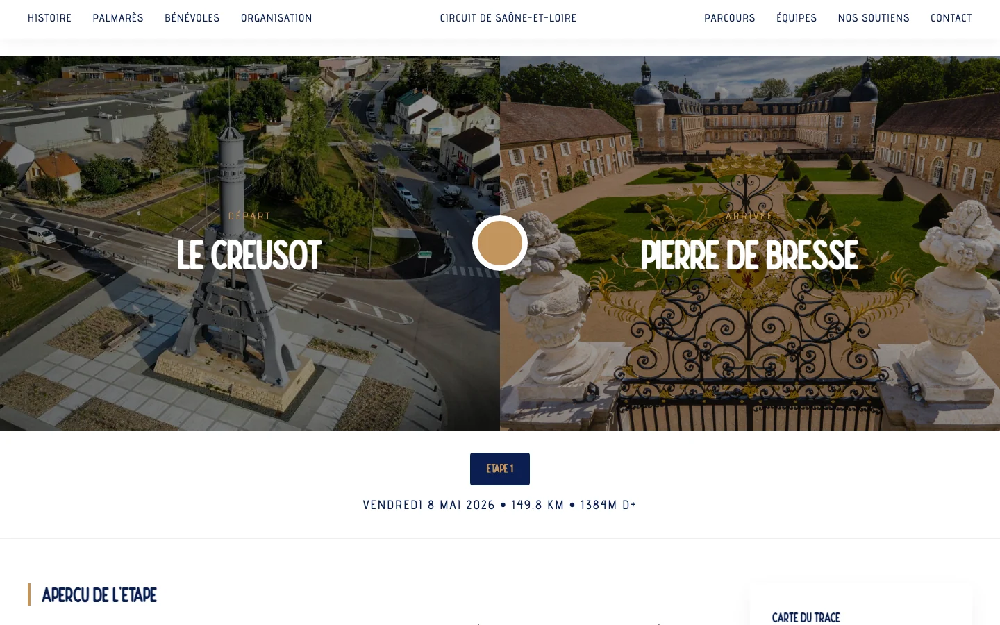
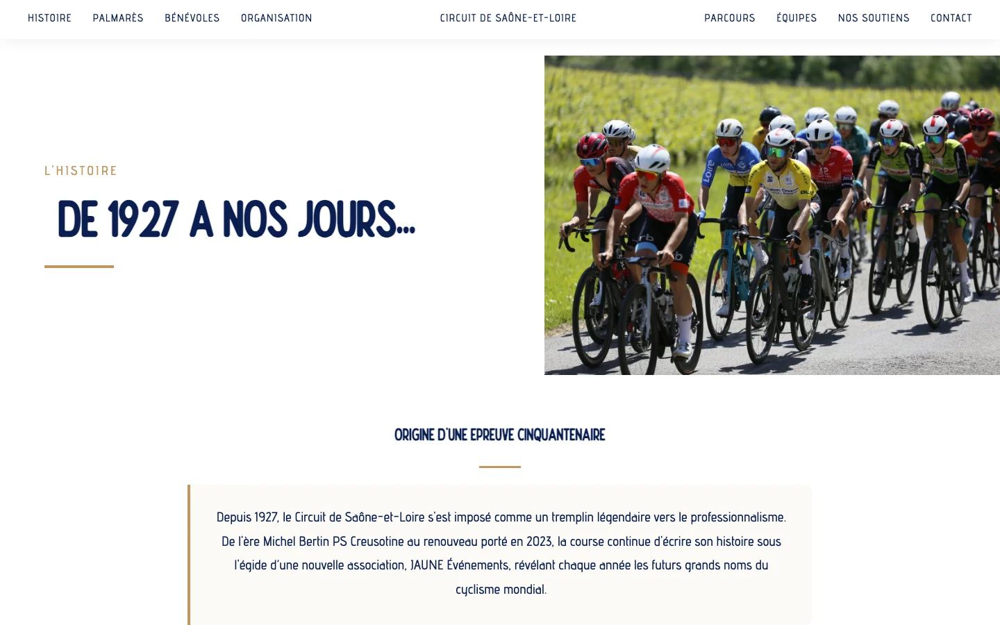

01
J'ai développé un site de course complet
J'ai voulu un site qui serve de point d'entrée unique : un compte à rebours avant la course, puis le direct étape par étape, les classements en PDF, les photos, les traces GPX, l'espace presse et les communiqués. Je l'ai codé à la main en HTML, CSS et JavaScript, responsive de bout en bout.

